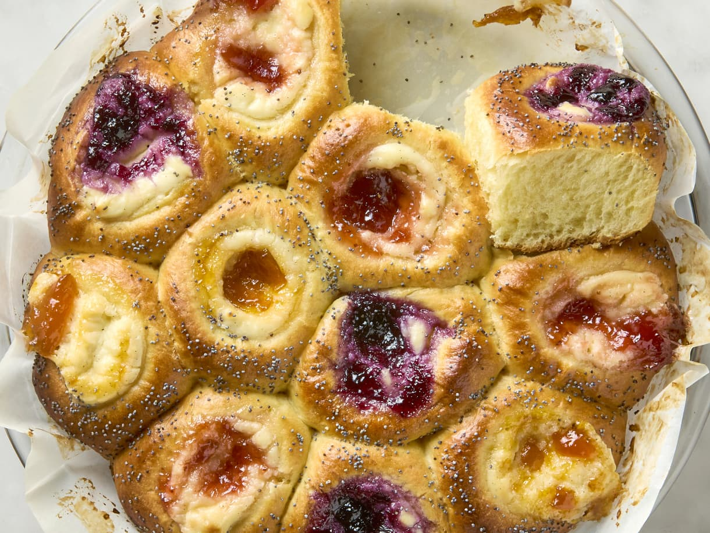

Jam and Cream Cheese Texas Kolaches
Sweet, soft, and perfectly fluffy with a jam and cream cheese filling. Perfect for breakfast or dessert!

Ingredients:
- 2 1/4 cups all-purpose flour, divided
- 4 tablespoons plus 1/2 teaspoon granulated sugar, divided
- 1 (1/4-ounce) packet dry active yeast (2 1/2 teaspoons)
- 1/2 cup plus 1 tablespoon whole or 2% milk, divided
- 6 tablespoons unsalted butter, plus more for greasing
- 2 teaspoons vanilla extract, divided
- 3/4 teaspoon kosher salt
- 2 large eggs
- 1 medium lemon
- 3 tablespoons apricot, strawberry, peach, or blueberry jam
- 4 ounces cream cheese
- 1/4 cup sour cream
- Poppy seeds, for sprinkling
Instructions:
- Activate the yeast: In a stand mixer, combine 1/2 cup of flour, 3 tablespoons sugar, and dry yeast. Heat 1/2 cup of milk until warm (100°F to 110°F). Add to the dry ingredients and mix. Let sit for 30 minutes to activate the yeast.
- Melt the butter: In a small bowl, melt the butter in the microwave (30-60 seconds). Add 1 teaspoon vanilla and salt, then whisk to combine. Beat in the egg yolks.
- Make the dough: Add the butter mixture to the activated yeast mixture. Gradually add the remaining flour and knead using the stand mixer until the dough is smooth, about 4 minutes. Let rise for 40 to 60 minutes.
- Shape the kolaches: Butter a 9-inch pie plate and line with parchment paper. Divide the dough into 12 equal pieces, roll them into balls, and arrange in the pie plate. Press a well into the center of each ball with your finger.
- Prepare the filling: Juice the lemon and mix with your choice of jam. Soften the cream cheese in the microwave, then mix with sour cream, sugar, vanilla, and salt. Transfer to a resealable bag.
- Fill the dough: Once the dough has risen, pipe the cream cheese mixture into each well, then top with the jam mixture. Brush the dough with a mixture of egg whites, milk, and sugar. Sprinkle with poppy seeds.
- Bake the Kolaches: Bake at 375°F for 20-30 minutes until golden brown. Let cool in the pan for 10 minutes before serving.
Go to Homepage